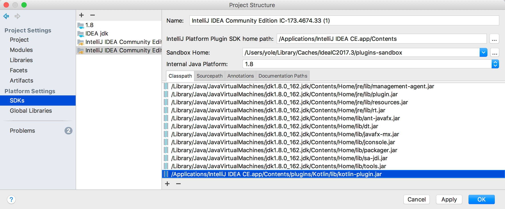

Plugin Dependencies
A plugin may depend on classes from other plugins, either bundled, third-party, or by the same author. This document describes the syntax for declaring plugin dependencies and optional plugin dependencies. For more information about dependencies on the IntelliJ Platform modules, see Part II of this document: Plugin Compatibility with IntelliJ Platform Products.
To express dependencies on classes from other plugins or modules, perform the following three required steps:
1. Preparing Sandbox
If the plugin is not bundled with the target IDE, run the (sandbox) IDE Development Instance of your target IDE and install the plugin there.
2. Project Setup
Depending on the chosen development workflow (Gradle or DevKit), one of the two following steps is necessary.
2.1 Gradle
If the project is using Gradle with a Groovy build script to build the plugin, add the dependency to the plugins parameter of the intellij block in your build.gradle, for example:
intellij {
plugins 'org.jetbrains.kotlin:1.3.11-release-IJ2018.3-1'
}
If the project is using Gradle with a Kotlin build script to build the plugin, use setPlugins() within the intellij block, for example:
intellij {
setPlugins("org.jetbrains.kotlin:1.3.11-release-IJ2018.3-1")
}
2.2 DevKit
If the project is using DevKit, add the JARs of the plugin on which the project depends to the classpath of the IntelliJ Platform SDK.
To do that, open the Project Structure dialog, select the SDK used in the project, press the + button in the Classpath tab, and select the plugin JAR file or files:
- For bundled plugins, the plugin JAR files are located in
plugins/<pluginname>orplugins/<pluginname>/libunder the main installation directory. If you’re not sure which JAR to add, you can add all of them. - For non-bundled plugins, the plugin JAR files are located in
config/plugins/<pluginname>orconfig/plugins/<pluginname>/libunder the directory specified as “Sandbox Home” in the IntelliJ Platform Plugin SDK settings.

3. Dependency Declaration in plugin.xml
Regardless of whether a plugin project uses Modules Available in All Products, or Modules Specific to Functionality, the correct module must be listed as a dependency in plugin.xml.
If a project depends on another plugin, the dependency must be declared like a module.
If only general IntelliJ Platform features (APIs) are used, then a default dependency on com.intellij.modules.platform must be declared.
To display a list of available IntelliJ Platform modules, invoke the code completion feature for the <depends> element contents while editing the plugin project’s plugin.xml file.
3.1 Configuring plugin.xml
In the plugin.xml, add a <depends> tag with the ID of the dependency plugin as its content.
Continuing with the example from Section 2 above, the dependency declaration in plugin.xml would be:
<depends>org.jetbrains.kotlin</depends>
Optional Plugin Dependencies
A project can also specify an optional plugin dependency. In this case, the plugin will load even if the plugin it depends on
is not installed or enabled, but part of the functionality of the plugin will not be available. In order to do that,
add optional="true" config-file="otherconfig.xml" to the <depends> tag.
For example, if a plugin project adds additional highlighting for Java and Kotlin files, use the following setup.
The main plugin.xml will define an annotator for Java and specify an optional dependency on the Kotlin plugin:
<idea-plugin>
...
<depends optional="true" config-file="withKotlin.xml">org.jetbrains.kotlin</depends>
<extensions defaultExtensionNs="com.intellij">
<annotator language="JAVA" implementationClass="com.example.MyJavaAnnotator"/>
</extensions>
</idea-plugin>
Then create a file called withKotlin.xml, in the same directory as the main plugin.xml file. In that file, define an annotator for Kotlin:
<idea-plugin>
<extensions defaultExtensionNs="com.intellij">
<annotator language="kotlin" implementationClass="com.example.MyKotlinAnnotator"/>
</extensions>
</idea-plugin>